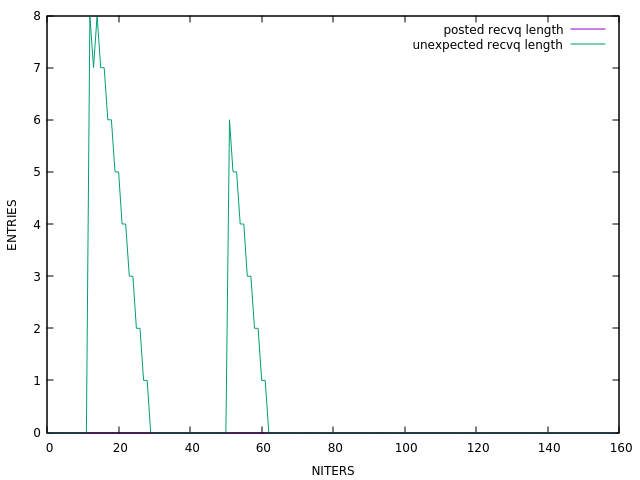
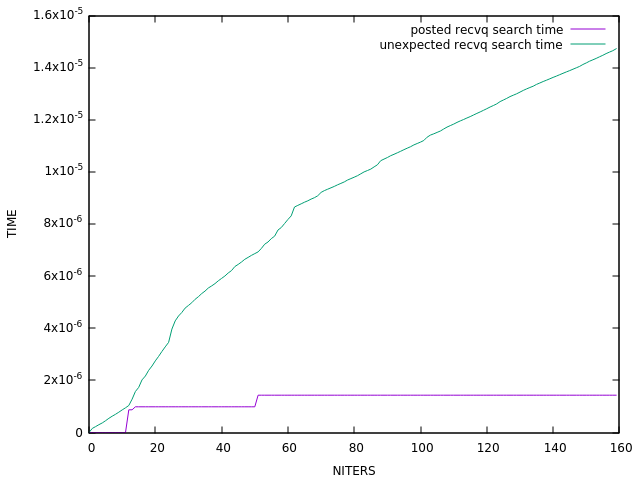
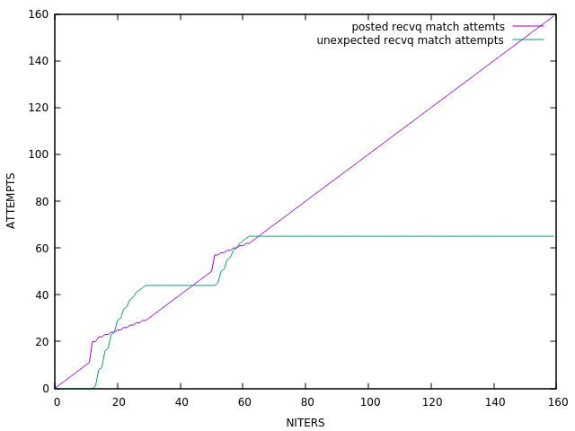

TASK: sweep3d
DESC: Some forms of physics within DOE's high-performance science workload have a strong level of dependencies which affect their communication patterns. One such case, is the use of sweeping algorithms. In this approach, a 3D data domain is decomposed over a 2D array of MPI ranks. Each processor is therefore given a "pencil" of data to process since X and Y data dimensions are divided by the 2D array of MPI ranks, the data in the Z-dimension is held on each processor. The communication proceeds by having the processor in one corner compute its solution for slices of its data array pencil (the Z-dimension is divided into slices). The face data from this slice is communicated to adjacent processors in X and in Y, who then compute their first slice while the original processor moves onto the next slice in its Z-dimension. The "sweep" therefore spreads outwards from the origin vertex and passes through the data/processor array. Once the sweep is fully solved for each slice in a pencil on one of the other vertices, a new sweep is started from a different vertex. Eventually sweeps are started from each vertex in the 3D data array (leading to 8 sweeps in total). Communication sweeps are generally regarded as stressing network latency because the messages are typically quite small and so few of them are in-flight at the same time that network bandwidth is very rarely stressed. The pattern which makes each MPI rank wait for upstream data to arrive can also cause significant delays to build up in very large rank counts/systems.

Unexpected queue allocated buffer size ~> min = 0, max = 32000, avg = 460 (0.000 Mb)